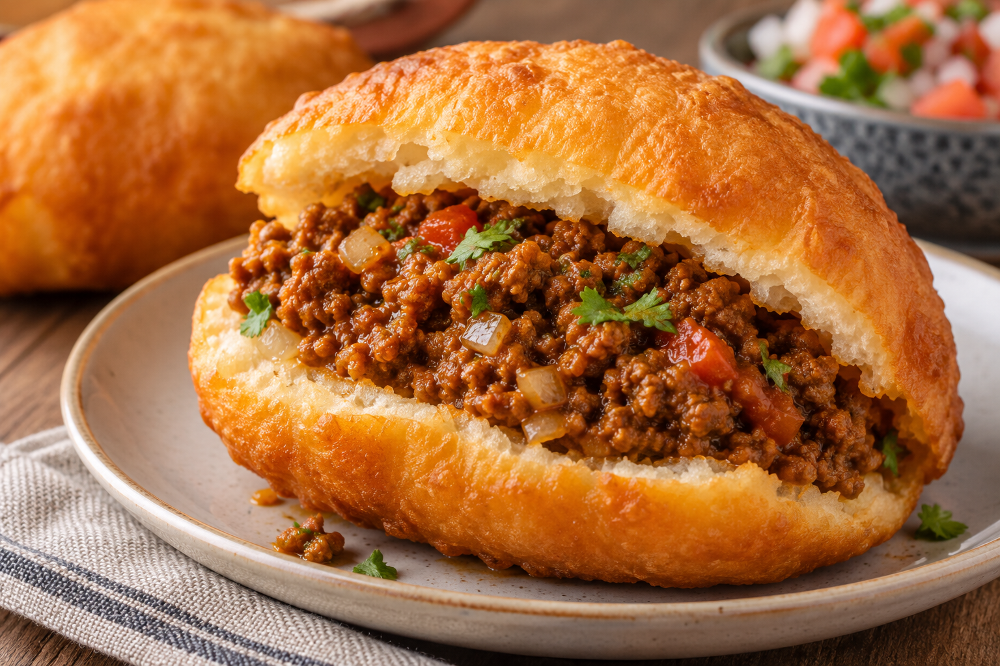

Vetkoek

Description:
Vetkoek is a traditional South African deep-fried yeast dough bread,
literally meaning "fat cake" in Afrikaans.
It is similar in shape to
a doughnut without a hole, featuring a crispy golden exterior and a warm,
fluffy inside.
Ingredients:
- 2 cups lukewarm Water
- ¼ cup White Sugar
- 1 (.25 ounce) package active Dry Yeast
- 7 cups all-purpose Flour
- 2 teaspoons Salt
- 3 cups Oil for Frying
Steps:
-
Mix lukewarm water, sugar, and yeast together in a small bowl until well
combined. Let stand until yeast softens and bubbles slightly, about 5
minutes.
- Sift flour and salt together into a large bowl.
-
Pour yeast mixture over flour mixture and knead until dough is smooth
and elastic, 5 to 7 minutes. Cover the bowl with a clean cloth and let
dough rise until doubled in volume, about 45 minutes.
-
Pinch off a piece of dough about the size of a tennis ball; roll until
smooth, then flatten until palm-sized; set aside on a floured work
surface. Repeat with remaining dough.
-
Heat oil in a deep fryer or large saucepan to 350 degrees F (175 degrees
C).
-
Fry dough in hot oil, 2 to 3 pieces at a time, until golden brown, about
3 minutes per side. Drain on paper towels.
Home